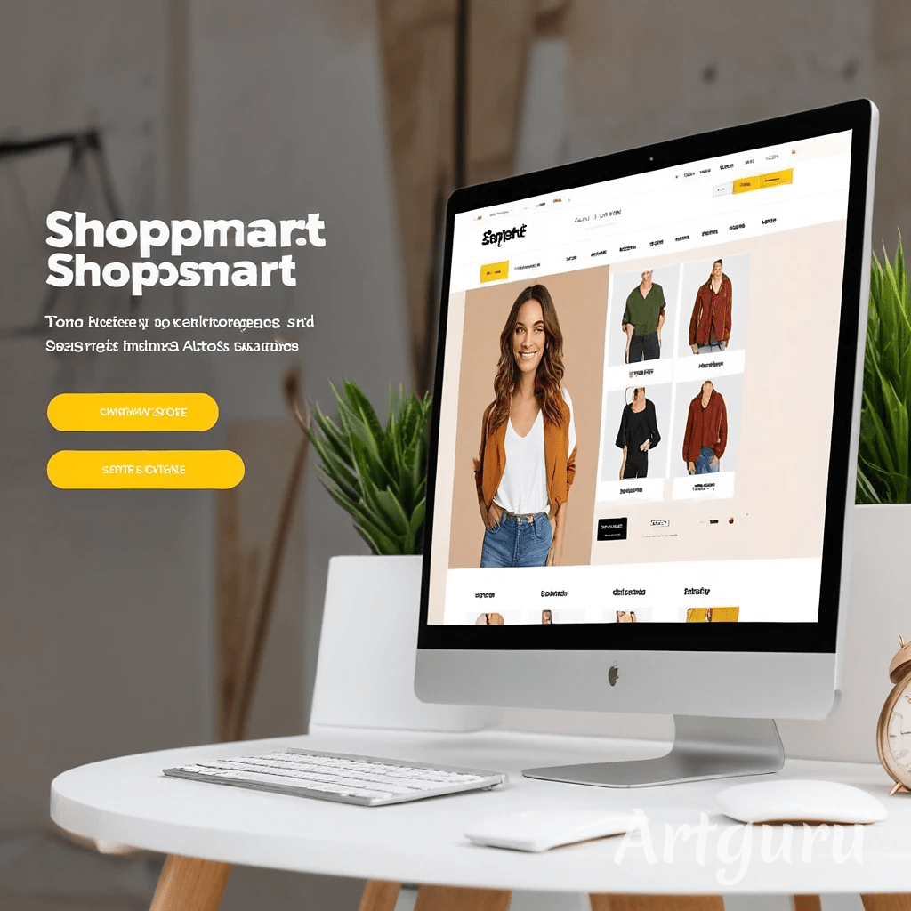

Loja Virtual - ShopSmart
E-commerce com Django e PostgreSQL, otimizado para mobile, com sistema de pagamento e painel administrativo.
Transformando ideias em código.
Olá, sou João Pedro, um apaixonado por tecnologia e programação. Desde cedo, sempre me interessei por resolver problemas e transformar ideias em soluções práticas por meio de código. Tenho experiência em desenvolvimento de software e um forte compromisso em criar aplicações eficientes, funcionais e visualmente atraentes.
E-commerce com Django e PostgreSQL, otimizado para mobile, com sistema de pagamento e painel administrativo.
API em Flask integrada ao OpenWeather, fornecendo dados climáticos em tempo real. Dockerizado para facilitar a escalabilidade.